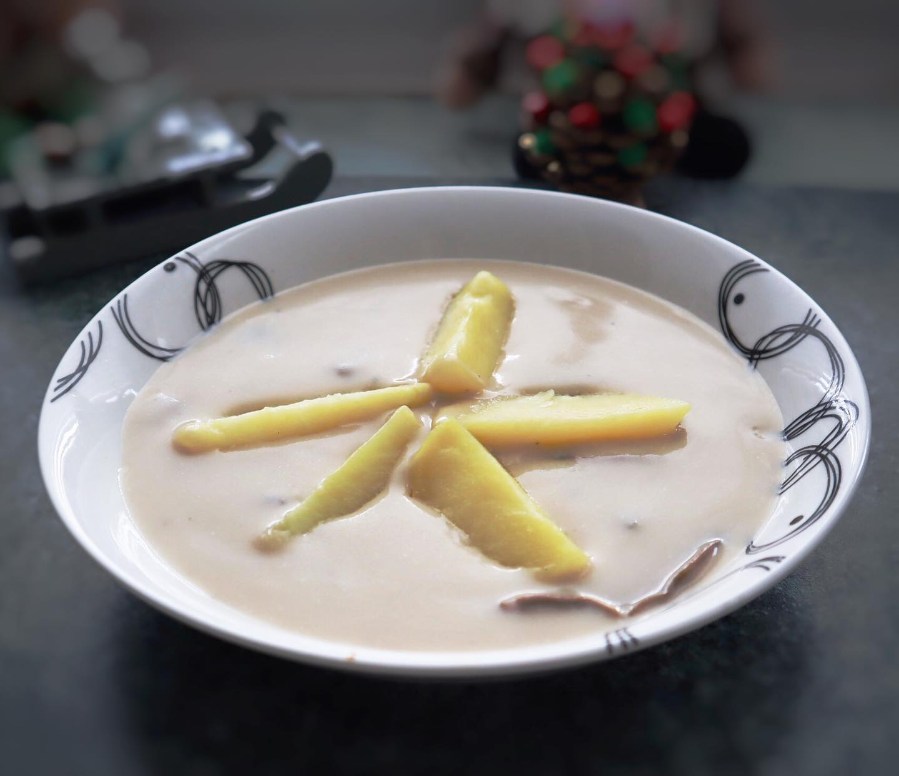

Hubová omáčka podľa @bud.vegan — Normy Jedál
Hubová štedrovečerná omáčka-je so mnou od kedy si pamätám. Pred šiestimi rokmi som vymenil smotanu na varenie za śojovú a ani nepoznám rozdiel. Recept mám od mamičky 🥰 Niekedy stačí tak málo. Vymeniť jednú jedinú surovinu a je na svete plnohodnotné vegánske jedlo. Alebo ju jednoducho vynechať. No sem mi tá smotana pasuje :)
Štedrá večera je teda kompletná. Už len koláčiky ale priznám sa že neviem piecť 😀
#vegan #veganfood #veganfoodporn #healthyfood #veganfortheanimals #veganforyourself #veganslovensko #veganpower #veganskerecepty #viemcojem #jemprelepsisvet #buducnostjeveganska #budvegan #plantbased #veganskejedlo #rastlinnastrava #jemprezem #nomeat #chlapvkuchyni #zelenakuchyna #nejedztezvieratka #nepapamzvieratka #animalsarefriendnotfood #kamosovnepapame #rastlinne #varimja #dnesjem #stedravecera #hubovaomacka #veganchristmasdinner